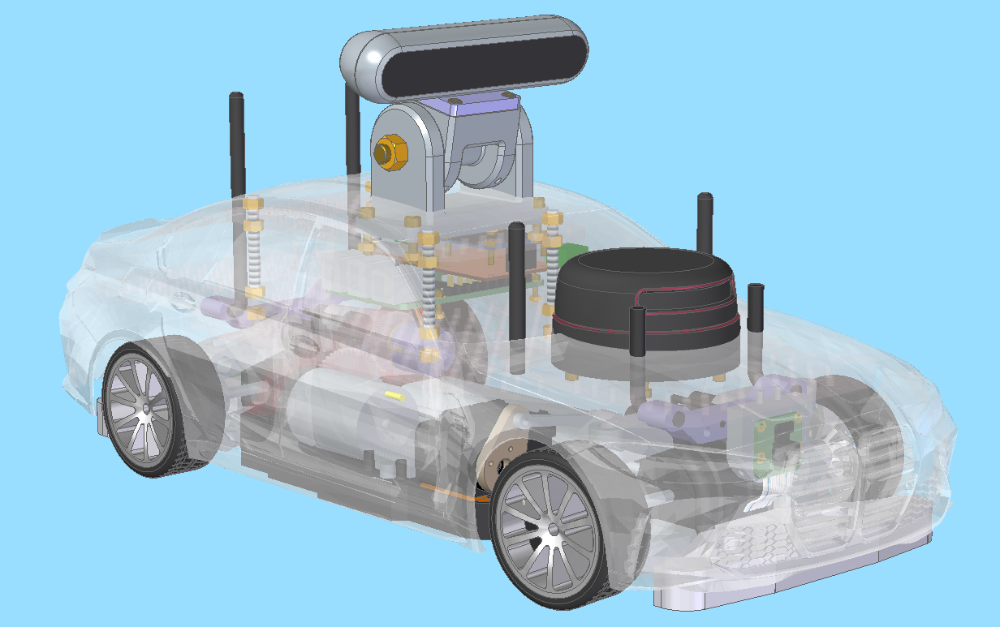
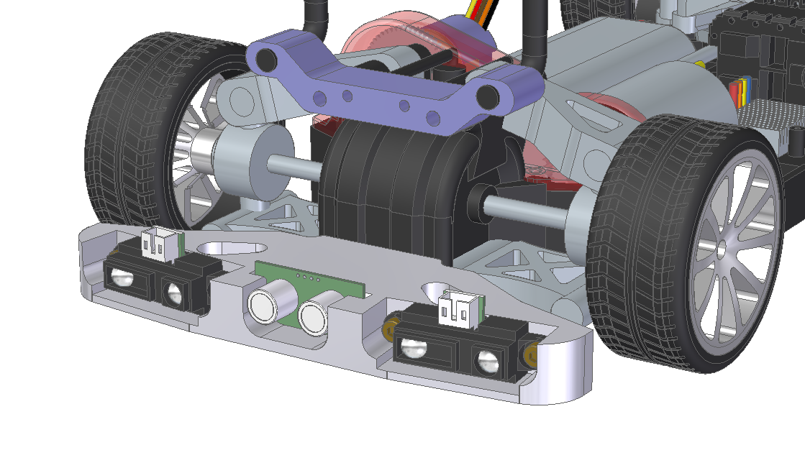

Voiture type pour la course de voitures autonomes de Paris Saclay
Une voiture type est proposée pour la course de voitures autonomes. Le kit complet devrait être disponible à la vente à partir de novembre 2022, notamment pour des équipes sans moyens de fabrication mécanique et/ou électronique. Cette voiture type n'est qu'un exemple pour aider les équipes à démarrer. Il ne demande qu'à être enrichi.
Contrôle-commande
Le schéma synoptique de la partie contrôle-commande est le suivant, avec plusieurs possibilités de Lidars, caméras, nano-ordinateurs ou micro-contrôleurs :

Une carte électronique de connexion de ces divers éléments est en cours de conception.
La mécanique
Des pièces mécaniques dont les fichiers 3D seront fournis prochainement sur le git permettent d'adapter le châssis TT-02 à ces équipements de contrôle-commande.

Outre les découpes propres de carrosserie, l'élément majeur de ce kit est l'ajout d'un codeur permettant d'obtenir une vitesse précise du moteur (éléments en rouge sur la figure ci-desssous)

Le kit propose notamment la possibilité d'utiliser un servo-moteur numérique AX-12 à la place du servo-moteur analogique standard.

Enfin, les pièces 3D permettent une fixation propre des capteurs à l'avant (caméra Raspberry) comme à l'arrière (télémètres IR et/ou ultrason).

Liste du matériel
Voici une liste de matériel, de fournisseurs et de prix HT indicatifs.
- Tamiya TT-02 1:10 Toyota GR86 ref 58694 - Conrad 2451022 - 132 €
- Pièce de tuning Set levier de direction alu TT-02 ref 54574 - Conrad 1720254 - 40 €
- Chargeur de modélisme 220 V 1A MW6168V NiMH VOLTCRAFT - Conrad 237739 - 15 €
- Pack de batterie (NiMh) 7.2 V 3000 mAh fiche T femelle - Conrad 238883 - 21 €
- Servomoteur numérique Dynamixel AX-12 - Gotronic 36433 - 41 €
- Centrale inertielle BNO055 Bosch - Gotronic 35784 - 22 €
- Afficheur OLED TF051 - Gotronic 36041
- Scanner Laser 360° RPLIDAR A2M8 Slamtec RPLIDAR A2M8 - Roboshop RB-Rpk-02 - 284 €
- Capteur de Distance GP2Y0A41SK0F IR Sharp - 4 à 30 cm - Roboshop RB-Dem-04 - 9 €
- Kit Raspberry Pi 4 Modèle B RPI4-MODB HDMISK-WHT4GB - Farnell 3401808 - 91 €
- Caméra pour Raspberry Pi, V2, Capteur Sony IMX219 8-Megapixel - Farnell 3677845 - 23 €
- STM32L011K4 MCU, Compatible Arduino Nano - Farnell 2535699 - 9 €
- Caméra avec profondeur RGBD Intel Realsense 82635AWGDVKPMP - DigiKey 544-3604-ND - 281 €